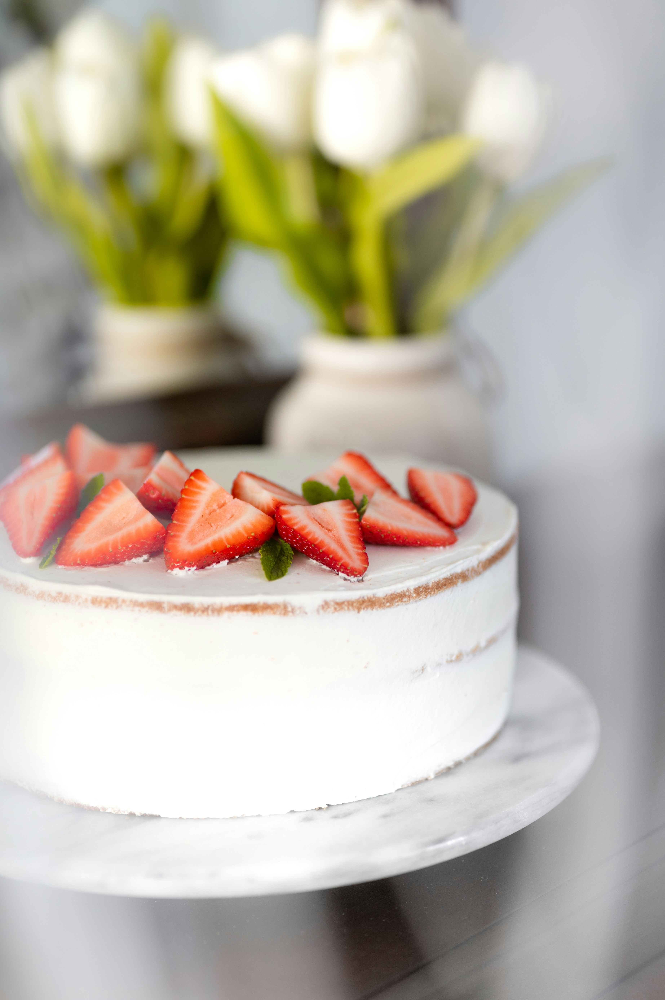
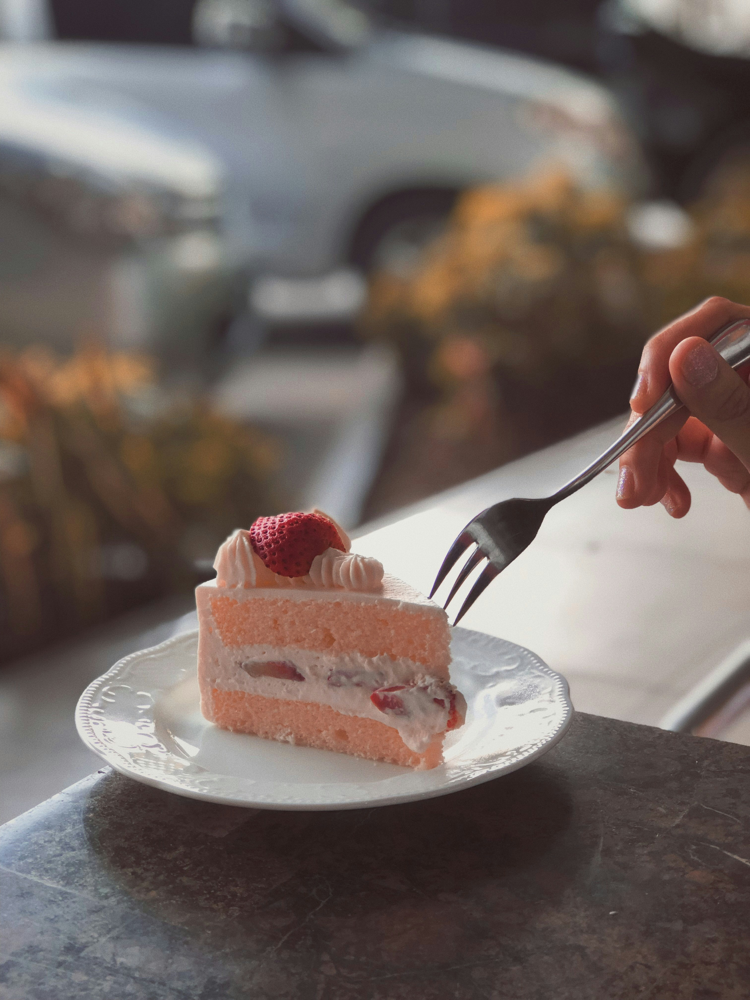
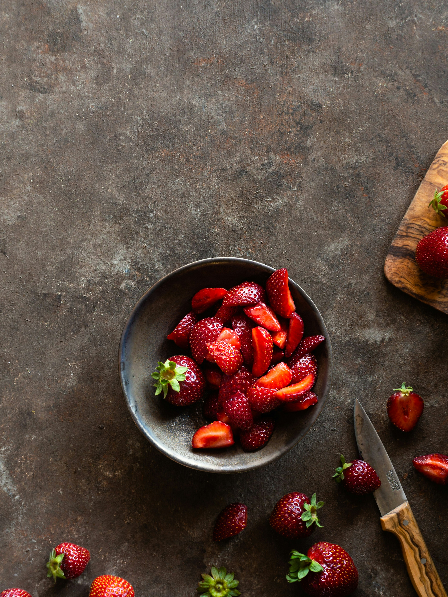

Ingredients
- 4 large eggs
- 120g granulated sugar
- 120g cake flour
- 1 tsp vanilla extract
- 1 tbsp unsalted butter, melted
- 2 tbsp milk
- 200ml heavy cream
- 2 tbsp powdered sugar
- 1 cup fresh strawberries, sliced
Instructions
- Preheat oven to 170°C (340°F) and line a round cake pan with parchment paper.
- In a large bowl, beat eggs and sugar until light and fluffy.
- Sift in the cake flour and gently fold to combine.
- Mix in vanilla extract, melted butter, and milk.
- Pour the batter into the prepared pan and bake for 25-30 minutes.
- Let the cake cool completely before slicing into two layers.
- Whip heavy cream, powdered sugar, and vanilla until stiff peaks form.
- Spread whipped cream over one sponge layer, add sliced strawberries, then top with the second layer.
- Cover the cake with more whipped cream, decorate with strawberries, and enjoy!
Sample Imagery



Recipe Website References
-
Sally’s Baking Addiction
- This site provides detailed recipes with step-by-step images and videos. The layout is user-friendly, with a clean design and high readability.
-
NYT Cooking
- This website offers professional-quality recipes with useful chef tips. The typography is clear, and the visual presentation is modern and sophisticated.
-
BBC Good Food
- BBC Good Food features structured recipes with ratings and user reviews, making it easy to find the best version of any dish.
Non-Recipe Website Inspirations
-
Apple
- The minimalistic approach and clean design make the content stand out. Large images and well-structured typography enhance the readability.
-
Airbnb
- The use of large, immersive visuals combined with concise text makes navigation intuitive. This design strategy could be applied to recipe presentations.
-
Pinterest
- The grid layout and visually engaging content organization serve as a great reference for designing an image-heavy recipe website.